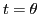
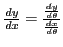
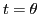
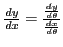

Next: Exercises Up: Change of variable Previous: Change of the independent Contents Index
It is often desirable to change both variables simultaneously. An important case is that arising in the transformation from rectangular to polar coordinates. Since
Solution.
Since in (11.5) and (11.6),  is any variable on which
is any variable on which  and
and  depend, we
may in this case let
, giving
, and
depend, we
may in this case let
, giving
, and
david joyner 2008-08-11